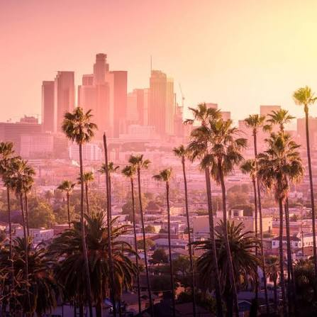

カリフォルニアに興味を持った理由
青い海、個性ある街並み、雄大な自然。さまざまな風景に出会えるカリフォルニアに興味があります。このサイトでは、旅行と写真の視点から、訪れてみたい場所や撮ってみたい景色を紹介します。
- 海辺：太平洋の広がりと、空の色を楽しみたい。
- 街並み：建物や道路から、その街らしさを見つけたい。
- 自然：日常とは違うスケールの景色を写真に残したい。
写真で紹介する風景

撮ってみたい写真
海辺では水平線を意識し、街では建物や道路の奥行きを生かした写真を撮ってみたいです。同じ場所でも時間帯によって光や色が変わるところに、旅行写真のおもしろさを感じます。
動画で感じるカリフォルニア
映像でもカリフォルニアの雰囲気を紹介します。風景や街並みに注目してみてください。
次に訪れてみたい場所
サンタモニカ、サンフランシスコ、ヨセミテ。それぞれの場所で見てみたい風景を、別のページにまとめました。
おすすめスポットを見る →旅行情報を調べる
カリフォルニアの観光情報は、Visit Californiaの公式サイトでも調べられます。
Visit California 公式サイト（外部リンク）